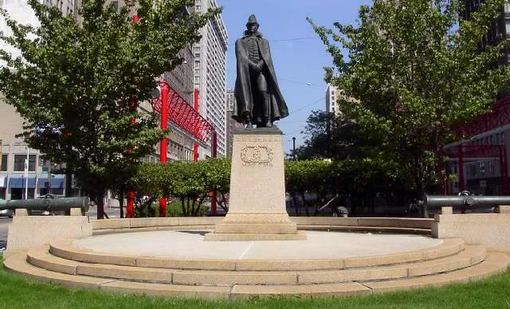

Description: General Alexander Macomb is portrayed in military attire with cape slightly off center, furling in the wind. Perhaps expressing the storm of battle, extreme concentration on his face is enhanced by the triangular shadow cast by his hat. The granite base sits atop a lower base that is a much broader three-stepped circular base, flanked by three cannons on low pedestals behind and to either side. The bronze was given a green finish. On the front of the statue are two raised wreaths and the following: "[incised:] A.A. Weinman. Fecit. [incised:] Cast by/ the Henry-Bonnard Bronze Co./ Mt. Vernon N.Y. 1908. [on front of upper base, incised:] Macomb. [on back of upper base, incised:] To Major General/ Alexander Macomb/ commanding the/ army of the United/ States, hero of the/ Battle of Plattsburg/ This monument is/ erected in the City/ of his birth by the/ Michigan Society/ of the United States/ Daughters of 1812/ September 11, 1908."
The idea to erect a Macomb Monument was born on December 13, 1898. It was suggested for Cadillac Square. Efforts were instigated in 1905 by the National Society of United States Daughters of 1812, State of Michigan, whose purpose was to "carry on patriotic and historical enterprises and to further educational and benevolent undertakings." The project started under the leadership of one president, Mrs. Alfred Russell, and continued with the zeal of the next president, Mrs. Bertram Whitney (who later became Mrs. Thomas Massey of New York.) The competition for the commission was announced January 14, 1906, in the DETROIT FREE PRESS with a February 1 deadline for sketches. The judges were Charles F. McKim, Daniel H. Burnham, and Augustus Saint-Gaudens. Some of the competitors included Edward Wagner and Carlo Ramanelli of Detroit, and Mrs. John Glenny, whose mother, Mrs. Alfred Russell, was the founder of the Society of Daughters of 1812 in Michigan. Each artist's model was marked with a symbol instead of the
artist's name in order to insure complete fairness. Adolph Alexander Weinman's design was chosen, with Albert Randolf Ross as architect, Henry-Bonnard Bronze Company, founder, and Maine & New Hampshire Granite Company as contractor. In May, 1906, the model was displayed in the Art Museum. The statue was unveiled and dedicated September 11, 1908. Weinman's sculpture has received praise and acclaim from the art world.
The State of Michigan provided $5,000 funding and the city of Detroit provided $2,000. The United States donated cannons to be used for metal, and the remaining $5,000 was funded by the Daughters of 1812. Macomb County desired to own the sculpture from 1972-75, but finally gave up their efforts and decided to erect their own monument. Lighting for the statue was installed as part of Central District Business Foundation Project in the fall of 1986.
General Macomb was born in Detroit on April 3, 1782 the son of a prominent and wealthy fur merchant, who owned much land, and his wife Catharine Navarre. He moved to New York at age eight, joined the army at 16, and in 1803, become a First Lieutenant. In 1805, he was promoted to captain. He was the first graduate of West Point Military Academy. In 1814, he became Brigadier General, and on September 11, 1814, he distinguished himself at the battle of Plattsburg on Lake Champlaign, New York. After the war of 1812, he returned to Detroit as Commander of the Fifth Military Department. Macomb became General in Chief of the American Army in Washington, D.C. He died on June 25, 1842.
More information can be obtained from the Burton Historical Section, located in the Main Branch of the Detroit Public Library. IAS files contain photocopies from International Studio 39 (December 1909), which details the composition of the monument; and Michigan History 3 (July 1919), which discusses fundraising and dedication. IAS files also contain additional biographical information about Macomb.
Save Outdoor Sculpture survey, Smithsonian American Art Museum, 1994.
|
|

|
|